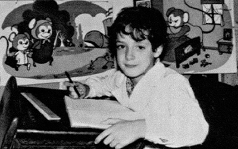
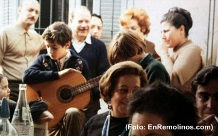
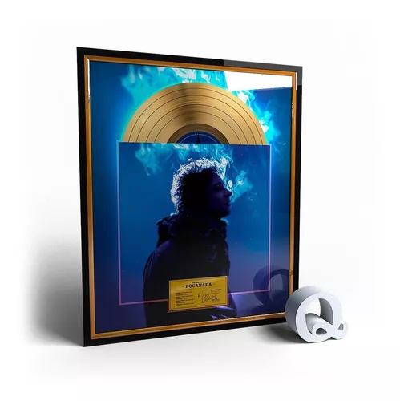
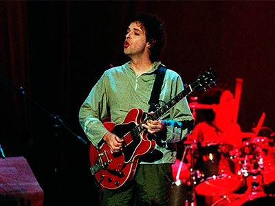
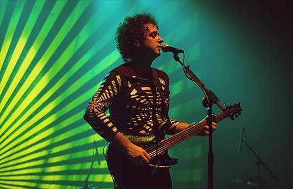
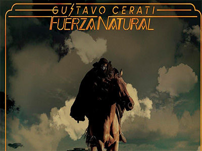

El comienzo
Su primer pasión
Gustavo Adrian Cerati nació el 11 de agosto de 1959 en Capital Federal, Buenos Aires, Argentina. Su carrera musical comienza en el año 1983, aunque antes de eso, a los seis años lo inscribieron en un colegio estatal y, a medida que aprendía a leer, descubrió los cómics y por consiguiente su primera gran pasión: el dibujo.
Lilian (su madre) remembró que cada vez que Juan José (el padre) volvía del trabajo, le compraba algún cómic de Superman, Tarzán o Flash, y de estos tomaba la base para crear historias como Supercerebro, parecido a Superman, o el hombre alado Argos, un símil a Batman que sobrevolaba las ciudades de noche.

Iniciando en la música
A los nueve años sus padres le obsequiaron una guitarra criolla, momento en que crecería su interés por la música. Dos semanas después de ese hecho, tomó clases de guitarra con una profesora y luego de mudarse al barrio Villa Ortúzar las continuó con otro maestro.
A los doce años creó una banda con dos amigos de otro barrio, y en 1976, con dieciséis, armó el grupo Koala que hacía música afroamericana y en el que asumió como guitarrista rítmico, más tarde integró la banda de Manuela Bravo.
A mediados de los setenta, el padre en sus viajes de trabajo a Miami, le traía de regalo vinilos de rock difíciles de conseguir en Argentina y en uno de ellos le obsequió su primera guitarra eléctrica, una Gibson SG de color marrón. Formó parte del coro de su colegio, pero lo retiraron por indisciplina; en la parroquia del establecimiento compuso sus primeras canciones, como la religiosa «Desértico» que tocaba en misa, y una navideña con base de rock progresivo con la que obtuvo el segundo lugar con Koala en un concurso musical que tuvo en los jurados a León Gieco y Carlos Cutaia, organizado y emitido en Canal 9. A pesar de ser felicitado por uno de los sacerdotes, no lo reintegraron al coro.

"La musica me salvo..."
Cerati dijo que la música salvaba su vida; en 1978 tenía que cumplir con el servicio militar obligatorio, y logró salirse gracias a un concurso folclórico al que ingresó. Al año siguiente, se inscribió en la Universidad del Salvador para estudiar publicidad.
Carrera
Cerati como solista
Cerati venía de un modo de trabajar en el que por años tenía que buscar la aprobación de sus compañeros de banda y limitarse a lo que ellos pudieran decir. Ahora tenía absoluta libertad creativa, mientras pasaba por un buen momento familiar con sus hijos en su nuevo hogar, donde armó su estudio Casa Submarina para grabar su segundo álbum solista, al que denominó el primero «sin el amparo» de Soda Stereo, puesto que su antecesor lo hizo aún siendo miembro.
Su presentacion y recibimiento
Ante una expectativa inédita por la presentación formal de Cerati como solista de parte de la prensa argentina en el rock local, el 28 de junio publicó Bocanada con un recibimiento inicialmente tibio del público y casi indiferente de la crítica, que destacó su nivel de producción como en «Verbo Carne», grabada con la Orquesta Sinfónica de Londres en Abbey Road Studios. Por otro lado, la crítica y el público de México y Chile lo recibió con más entusiasmo. Supuso «un presagio de lo que vendría después del rock latino», de acuerdo con el diario en línea El Mostrador: «Más de una vibración digital y electrónica, y menos del rocanrol tradicional cargado de guitarras», lo que llevó al rechazo inicial que cambió con el tiempo, hasta considerarse un disco icónico del rock argentino y latino; recibió la certificación de disco de oro en Argentina.

Primeros premios como solista
En agosto de 1999, MTV eligió a Cerati como el artista del mes, y, a finales de año, el suplemento NO de Página/12 lo nombró el mejor artista de la década, junto con Charly García. En los premios Gardel de 2000 ganó a mejor artista rock y mejor diseño de portada. La canción «Puente» se convirtió en su primer éxito solista, nominada a un Grammy Latino como mejor canción de rock y considerada una de las mejores del rock argentino por MTV y Rolling Stone. La última señaló que «“Puente” es la canción himno de un álbum de reinvenciones», además, una de las pocas del disco que no «incluye fragmentos ajenos» mediante sampleos.
Gira "Bocanada"
La gira Bocanada inició el 25 de septiembre de 1999 en México; hizo seis actuaciones llenas en el Teatro Gran Rex en octubre, ante un público frío con su nuevo trabajo que le pedía temas de Soda Stereo, pero no accedía. En junio de 2000, con la banda mexicana Café Tacvba hizo una serie de conciertos por México y Argentina bajo el nombre de la gira Bocanada al revés (en fusión con Revés/Yo soy); Cerati en su estado de visita abría a los locales, mientras que en su país cerraba, uniéndose a la actuación de Café Tacvba para cantar «Juego de seducción». Ese año Ocio editó el EP Insular, que llevó al dúo ser partícipes del festival Sónar en Barcelona (España).

"Siempre es hoy"
El 26 de noviembre de 2002 lanzó su tercer álbum solista Siempre es hoy. Marcado por su separación con Aménabar y su nueva relación con De Corral, combinó su devoción por la electrónica con el regreso de su lado roquero lleno de guitarras, a la vez que incursionaba en otros géneros como hip hop y rap.
La gira Siempre es Hoy abrió en Quito (Ecuador) y abarcó América y España entre finales de 2002 y fines de 2004, con 48 conciertos.
Album recopilatorio 93-04
En 2004, Cerati publicó el álbum recopilatorio Canciones elegidas 93-04 en CD+DVD; sugerido para editarlo en España, lo lanzó también en América Latina y Estados Unidos, pero con un listado de canciones distinto que incluyó «Tu locura», que hizo para la serie de televisión Locas de amor,nominado a tema musical original en los Premios Martín Fierro 2005. En abril de 2005, apareció como invitado sorpresa de Los Pericos en la sexta edición del festival Vive Latino.
"Ahi vamos"
El 4 de abril de 2006 sacó su cuarto álbum Ahí vamos, que coprodujo con Tweety González. Lanzado simultáneamente en Argentina y México, en el primero logró disco de platino por la venta anticipada de 40 000 copias, y en el segundo disco de oro semanas después, mismo que recibió en Chile.
La gira Ahí Vamos inició el 1 de junio de 2006 en Ciudad de México y siguió por América Latina, Estados Unidos, España y Londres, con 76 conciertos en total.
El primer corte del disco, «Crimen», que rompe el molde con una power ballad que incluye un piano, hizo debut en el número uno de las radios argentinas. Ahí vamos y «Crimen» ganaron a Mejor álbum vocal y Mejor canción rock en los Grammy Latino 2006. Cerati cerró el año consagrándose como solista con la aceptación del público. En los Premios Gardel 2007 arrasó en seis categorías más el Gardel de Oro.
En la edición 2008 "Ahí vamos" sumó el trofeo a mejor DVD. Los demás sencillos «La excepción», «Adiós», «Lago en el cielo» y «Me quedo aquí» también destacaron.

Regreso como solista
En julio de 2009 regresó como solista con el sencillo «Déjà vu». El 1 de septiembre lanzó el álbum "Fuerza natural", ligado más al sonido de guitarras acústicas folk y country. Cerati definió el álbum «ambientado hacia el cine», en ese sentido, pretendía sacar todas las canciones en un único y gran videoclip en forma de película o road movie. Logró un disco de oro por las ventas anticipadas, y más tarde, disco de platino.

Logros de la decada
"Fuerza natural" y "Déjà vu" tuvieron varios logros, premios y reconocimientos: en las listas Billboard: Top Latin Albums (puesto 53), Latin Pop Albums (puesto 10), Latin Pop Airplay (puesto 32), Mexico Espanol Airplay (puesto 9) y Mexico Airplay (puestos 14); en Rolling Stone: puesto 5 dentro de los mejores discos de 2009, primer lugar en Top cinco de clips nacionales y puesto 12 en las cien mejores canciones del año; lideraron en las encuestas del suplemento S! de Clarín en mejor disco y mejor tema —además, Cerati mejor artista solista—, mejor canción del año y mejor álbum de rock en los premios Gardel 2010, dentro de siete categorías en las que se impuso Cerati, además de su segundo Gardel de Oro, y mejor álbum rock, mejor canción rock y mejor diseño de portada en los Grammy Latinos 2010.